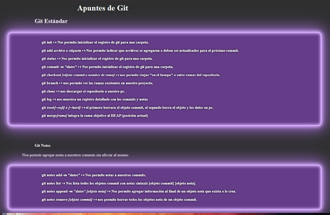
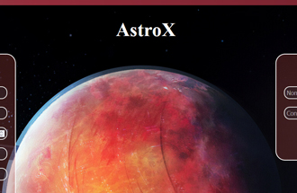
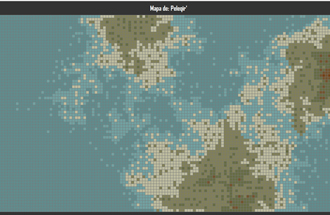

Estos son algunos de los proyectos que desarrollado hasta la actualidad.

Manual de Git
El resultado del estudio de Git y GitHub en manual/ayuda memoria, donde he redactado los conocimientos que he adquirido durante la primera semana de PPJ en ACL.

Astro X
Proyecto para el estudio de las tecnologías HTML, CSS3 y JavaScript, es una aplicación de una única página donde se podrá registrar e iniciar sesión para agregar tareas a completar y marcar su estado.

Generador de mapas
Este proyecto es un aplicación para escritorio en Java, que crea mapas planisferios de forma aleatoria, permitiendo eligir los colores, ver la radiación solar o zonas proliferas.